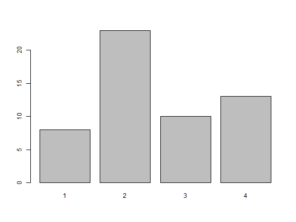

Factors
R也能把資料存為factor。
在大部分實驗中,某些解釋變數經常有不同程度的測試,稱為因子。 大意如下：
... includes trials for different levels of some explanatory variable. The different levels are also called factors.
factor , levels
fert = c(10,20,20,50,10,20,10,50,20)
fert = factor(fert,levels=c(10,20,50),ordered=TRUE) #🏷👏這裡有沒有給levels無差別,因為內定就是unique value為標籤
str(fert)
#> Ord.factor w/ 3 levels "10"<"20"<"50": 1 2 2 3 1 2 1 3 2
-
levels()可以顯示變數類別為factor的標籤。白話文就是用在factor()函數之後。-
levels(fert) 產生一個「字串向量」
levels(fert) #🏷👏函數levels()的參數是factor如果傳數字向量,結果是NULL #> [1] "10" "20" "50" str(levels(fert)) # 🏷👏只是字串向量 #> chr [1:3] "10" "20" "50"
-
-
fert 的內容，如果忽略標籤本身，其實是數字
fert #> [1] 10 20 20 50 10 20 10 50 20 #> Levels: 10 < 20 < 50 typeof(fert) #> [1] "integer" class(fert) #> [1] "ordered" "factor" str(fert) #> Ord.factor w/ 3 levels "10"<"20"<"50": 1 2 2 3 1 2 1 3 2- 💡 因此, attr(x,"levels")=levels(x)。
-
上面的
typeof(fert)說是數字,但是如果真的把它當成數字向量,又無法利用函數mean計算平均💣mean(fert) #> Warning in mean.default(fert): 引數不是數值也不是邏輯值：回覆 NA #> [1] NA #🏷👏無法計算平均,因為factor不是數值 -
必須轉換:
mean(as.numeric(levels(fert)[fert])) #> [1] 23.33333 -
那麼最小值呢?
min(fert) #> [1] 10 #> Levels: 10 < 20 < 50
❓為甚麼上面的求最小可以,這裡又不行?
fert = c(10,20,20,50,10,20,10,50,20)
fert = factor(fert,levels=c(10,20,50) ) # 🏷👏這裡的因子沒有指定順序,所以也沒有最小,最大
min(fert)
#> Error in Summary.factor(structure(c(1L, 2L, 2L, 3L, 1L, 2L, 1L, 3L, 2L: 'min' 對因子沒有意義
探索
a <- factor(c("A", "A", "B", "A", "B", "B", "C", "A", "C"))
預期答案是factor,ok。
class(a)
#> [1] "factor"
因為a已經被編碼，預期是numeric，這裡答案直接給定integer:
typeof(a)
#> [1] "integer"
a是一個factor,所以a[]代表a的一個子集合，因此結果看起來也是類似原來a的型態：
a[1]
#> [1] A
#> Levels: A B C
驗證是不是和上面的表示方式一樣：
a
#> [1] A A B A B B C A C
#> Levels: A B C
所以，a,a[]都是類型為factor的變數。
按照之前[]和[[]]的規則，這裡會出現什麼？
a[[1]]
#> [1] A
#> Levels: A B C
出現的結果和a[1]一樣，這說明了，a的結構不是list,利用str()函數看一下確認：
str(a)
#> Factor w/ 3 levels "A","B","C": 1 1 2 1 2 2 3 1 3
總之，a[1] a[[1]] 都是Factor 沒有[ 和 [[ 的分別。這個factor也是r的內建資料型態。
其他驗證如下，自行推敲：
> typeof(a[[1]])
[1] "integer"
> typeof(a[1])
[1] "integer"
> class(a[[1]])
[1] "factor"
> class(a[1])
[1] "factor"
常用來和table配合
table(a) #🏷👏ABC分別出現幾次
#> a
#> A B C
#> 4 3 2
利用summary函數的時候,這裡不再列出5個統計量:
summary(a) #🏷👏ABC分別出現幾次
#> A B C
#> 4 3 2
練習
❓找回原來還沒被factor的向量。
x<-c("a","b","c")
fx<-factor(x) # 現在x是一個factor
現在假定,我們只有fx,要找回x的內容。
💡 hint:c("a","b","c")[c(1,1,2,3,2)] ==> a,a,b,c,b 。
x<-c("a","b","c")
fx<-factor(x) # 現在x是一個factor
#💡
x<-levels(fx)[fx] #現在又被轉回原來的x
factor 和函數read.csv()
read.csv() 的傳回值的類別是data.frame。但是在讀檔的時候，如果遇到字串欄位，👺要注意是否會將字串欄位預設轉為factor欄位👺。
觀察carbon dioxide 對樹木的生長速率 trees91.csv 。附件
tree = read.csv("./resources/trees91.csv", header = TRUE, sep = ",");
-
在CHBR這個欄位中,因為不全都是數字,因此R自動假定這是一個factor。
- 因此針對這個欄位
summary()函數不會列出5個統計量,而是列出次數表。因為，一旦向量轉為一組factors, 5個基本統計量不再有意義。
summary(tree$CHBR) #> Length Class Mode #> 54 character character #🏷在CHBR這個欄位中,因為不全都是數字,因此R自動假定這是一個factor。 - 因此針對這個欄位
-
但有些欄位例如C,也是一個factor。但是,R認定為數字,這時必須手動處理。 以下將 tree$C 轉為 factor:
tree$C #🏷這是1個factor,但是轉進來的時候,被認定為數字 #> [1] 1 1 1 1 1 1 1 1 2 2 2 2 2 2 2 2 2 2 2 2 2 2 2 2 2 2 2 2 2 2 2 3 3 3 3 3 3 3 #> [39] 3 3 3 4 4 4 4 4 4 4 4 4 4 4 4 4 summary(tree$C) #> Min. 1st Qu. Median Mean 3rd Qu. Max. #> 1.000 2.000 2.000 2.519 3.000 4.000 tree$C <- factor(tree$C) tree$C #> [1] 1 1 1 1 1 1 1 1 2 2 2 2 2 2 2 2 2 2 2 2 2 2 2 2 2 2 2 2 2 2 2 3 3 3 3 3 3 3 #> [39] 3 3 3 4 4 4 4 4 4 4 4 4 4 4 4 4 #> Levels: 1 2 3 4 summary(tree$C) #> 1 2 3 4 #> 8 23 10 13 levels(tree$C) #> [1] "1" "2" "3" "4" -
plot
barplot(table(tree$C)) figure
Table()
table()指令:
這個指令通常用來建立因子之間的關聯表(contingency table)。參數通常是一個「因子向量」(factor vector)。
One Way Tables
建立一個單因子關聯表（one way table）:
a <- factor(c("A", "A", "B", "A", "B", "B", "C", "A", "C"))
table_a <- table(a)
table_a
#> a
#> A B C
#> 4 3 2
attributes可以看出table_a裡面有哪些帶名元素
attributes(table_a)
#> $dim
#> [1] 3
#>
#> $dimnames
#> $dimnames$a
#> [1] "A" "B" "C"
#>
#>
#> $class
#> [1] "table"
summary(table_a)
#> Number of cases in table: 9
#> Number of factors: 1
對照table(a)，直接把factor 變數，代入summary()看一下，結果是次數分配表（如下）
table(a)
#> a
#> A B C
#> 4 3 2
summary(a)
#> A B C
#> 4 3 2
Two Way Tables
這個例子中有兩個問題:第1個問題的答案有“Never,” “Sometimes,” or “Always.”
第2個問題的答案有 “Yes,” “No,” or “Maybe.”
兩個問題分別以向量a,b存放( The set of vectors “a,” and “b,” contain the response for each measurement.)
a <- c("Sometimes", "Sometimes", "Never", "Always", "Always", "Sometimes", "Sometimes", "Never")
b <- c("Maybe", "Maybe", "Yes", "Maybe", "Maybe", "No", "Yes", "No")
results <- table(a, b)
results
#> b
#> a Maybe No Yes
#> Always 2 0 0
#> Never 0 1 1
#> Sometimes 2 1 1
在表格中,可以看到同時回答 “Maybe” “Sometimes” 的個數有幾個。
這裡是另一個直接由我們知道的數據建立table的例子
sexsmoke <- matrix(c(70, 120, 65, 140), ncol = 2, byrow = TRUE)
rownames(sexsmoke) <- c("male", "female")
colnames(sexsmoke) <- c("smoke", "nosmoke")
sexsmoke <- as.table(sexsmoke)
sexsmoke
#> smoke nosmoke
#> male 70 120
#> female 65 140
💡雙變量分析方式可包括:
列聯表 Crosstabs table(), ftable(), prop.table()
data.table
if(!require("data.table")) install.packages("data.table")
#> 載入需要的套件：data.table
DT = data.table(
ID = c("b","b","b","a","a","c"),
a = 1:6,
b = 7:12,
c = 13:18
)
DT
| ID | a | b | c |
|---|---|---|---|
| b | 1 | 7 | 13 |
| b | 2 | 8 | 14 |
| b | 3 | 9 | 15 |
| a | 4 | 10 | 16 |
| a | 5 | 11 | 17 |
| c | 6 | 12 | 18 |
class(DT$ID) #🏷👏不會被轉為factor
#> [1] "character"